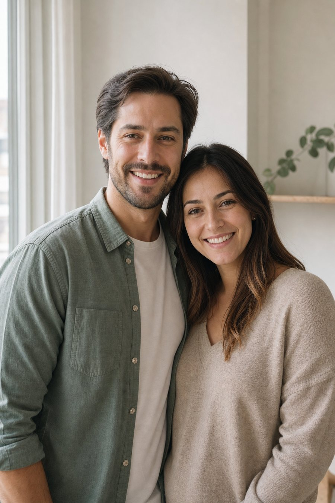

Промтзилла
Как будет выглядеть ребёнок по фото родителей через ИИ
Загрузи фото родителей онлайн — ИИ или нейросеть создаст мягкий визуальный прогноз внешности ребёнка без обещания точного результата.
Пошаговая инструкция
- 1Подготовь фото обоих родителей с хорошим светом и видимыми лицами.
- 2Загрузи два фото в GPT Image 2 или Nano Banana PRO онлайн.
- 3Укажи желаемый возраст ребёнка: младенец, 3 года, 5 лет или подросток.
- 4Попроси сделать результат мягким и уважительным, без обещания точности.
- 5Если результат странный, попроси убрать взрослые черты и сделать лицо естественнее.
- 6Используй картинку как развлекательный прогноз, а не как реальное предсказание.
Пример: до и после

ДоЗагружаем фото родителей, где хорошо видны лица.

ПослеНейросеть создаёт гипотетический портрет ребёнка и визуальные признаки.
Промт
RU
Загружаю фото двух родителей. Нужно создать гипотетический портрет ребёнка по фото родителей через ИИ.
Возраст ребёнка: {{ВОЗРАСТ_РЕБЁНКА_НАПРИМЕР_5_ЛЕТ}}.
Требования:
— Используй фото родителей как визуальную основу для мягкого прогноза внешности
— Смешай общие признаки: цвет волос, глаз, форму лица, улыбку, тон кожи и выражение
— Ребёнок должен выглядеть естественно, доброжелательно и по возрасту
— Не делай точных утверждений: это только развлекательная визуализация от нейросети
— Не вставляй взрослые лица на детское тело
— Можно оформить результат как чистую инфографику без длинного текста
— Без водяных знаков, логотипов и случайных надписей
EN
I'm uploading photos of two parents. Create a hypothetical child portrait from the parents' photos using AI.
Child age: {{CHILD_AGE_FOR_EXAMPLE_5_YEARS_OLD}}.
Requirements:
- Use the parents' photos as a visual basis for a soft appearance preview
- Blend general traits: hair color, eye color, face shape, smile, skin tone and expression
- The child should look natural, friendly and age-appropriate
- Do not make certainty claims: this is only an entertaining neural-network visualization
- Do not put adult faces onto a child's body
- You may design the result as a clean infographic without long text
- No watermarks, logos or random captions
Теги